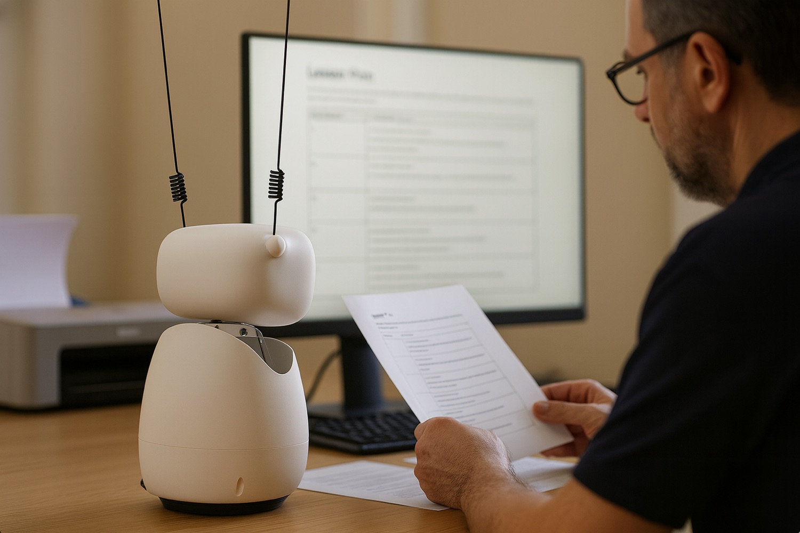
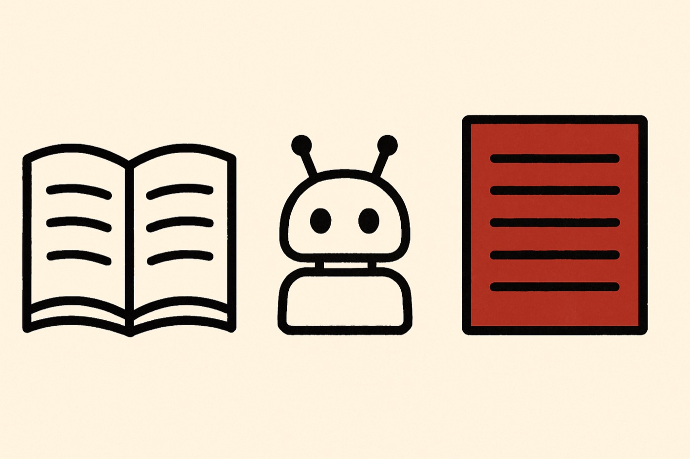

Помощник на ту работу, которая идёт до урока: найти материал, подогнать под этот класс и этот учебник, сделать раздатки. Он помнит — учебник, класс, что сработало в прошлый раз. Живёт в небольшом роботе на столе, поэтому спросить его стоит одного: сказать вслух.

Подготовка к занятию — рабочий час, который повторяется каждый день и каждый раз начинается с нуля. Инструменты, которые собирают план, уже есть. Все они беспамятны: не знают ни учебника, ни класса, ни учителя. На выходе общий план, который потом подгоняют руками. Здесь строится память — и тело, в котором она живёт.

Сборка плана — главное умение, и тела оно не требует вовсе. Та же работа делается в браузере: это строится отдельным сервисом, который работает сам по себе и позже встраивается в робота. Тело меняет другое. Помощник стоит на столе, пока учитель работает, к нему обращаются вслух, не открывая ноутбук, и его можно взять с собой в класс. Это тот же помощник — только до него ближе, и он живой в комнате.
Сам урок и то, что после него, — другая задача, и здесь она не заявляется.
Робот — готовый Reachy Mini компании Pollen Robotics, куплен собранным. Внутри девять сервомоторов, четыре микрофона, динамик, камера, одноплатный компьютер и служебная программа производителя, которая управляет моторами. Из коробки он двигается и запускает приложения из магазина производителя. Разговаривать он не умеет. Чтобы это изменить, написаны две программы.
Части включаются и выключаются отдельными кнопками, потому что и ломаются они по отдельности: робот может отвечать голосом при выключенных моторах. Зависимость одна — программа разговора не запускается, когда моторы выключены.
Память — обычный текстовый файл, который робот растит сам. После паузы в разговоре вторая программа читает расшифровку, и то, что стоит помнить, уходит в файл. Ничего не пересказано для витрины — это строки из того файла, как они есть.
Собрали стенд, чтобы определять направление на голос, и сняли двенадцать сцен. Выяснилось, что робот не отличает звук спереди от звука сзади. Это написано в документации производителя: четыре микрофона стоят в один ряд, поэтому направление считается только в пределах 180°. Полдня ушло на проверку известного факта. С тех пор новая задача начинается с чтения документации и готовых приложений, а измерения делаем только там, где данных нет.
Когда Ричи спрашивали о том, что нужно посмотреть, он замолкал на всё время поиска. Программа внутри робота ждала ответа от ноутбука и не могла закончить реплику. Теперь запрос подтверждается сразу. Ричи говорит, что ищет, и продолжает разговор, а результат приходит через несколько секунд отдельной репликой. Плата за это: ответ не привязан к вопросу и может прийти, когда разговор ушёл в сторону.
За сутки запросы к модели обошлись в 10 долларов. Один вопрос обработался шестью запросами подряд. Каждый отправлял всю прошлую переписку вместе с текстом найденных страниц. Чем длиннее разговор, тем дороже каждый следующий запрос. Разделили работы — поиск идёт на модель подороже, разбор разговора в память на дешёвую. После каждого ответа теперь печатается его цена. При переключении выяснилось, что дешёвая модель не принимает один из параметров, и память сутки молча не записывалась.
Ричи читал файлы проекта — те, где мы записываем ход работы и поломки. Он рассказывал автору о неисправностях, которых у него уже не было. Завели отдельные файлы для самого робота: кто он, что у него сейчас работает, почему сделано так. Он читает их перед каждым ответом. Плата: эти файлы мы обновляем вручную, сам он их не ведёт.
Микрофон отдаёт запись двумя каналами. Мы соединяли их в один ряд подряд. Из-за этого запись звучала вдвое быстрее, и распознавание речи возвращало обрывки или ничего. Уровень и спектр при этом выглядели нормально, поэтому по приборам ошибка не была видна. Стали брать среднее двух каналов: речь распозналась, а фоновый шум, который мы принимали за моторы, упал в одиннадцать раз.
Управлять роботом через библиотеку производителя не получилось. Она разрывает соединение, если робот не отвечает секунду, а не отвечает он, пока занят. Её видеоканал вешает весь интерфейс. Стали обращаться напрямую к служебной программе внутри робота: у неё свой веб-интерфейс, и команда движения выполняется за 23 миллисекунды. Что берём из этого: если у устройства есть удобная обёртка, стоит посмотреть, что под ней.
Робот заказан в июле, приехал в коробке, сборка заняла вечер. Из коробки он двигается, и на нём запускаются приложения из магазина производителя — мы прогнали три, чтобы увидеть возможности платформы. Разговора, который помнит прошлое, среди них нет, поэтому дальше идут наши программы.